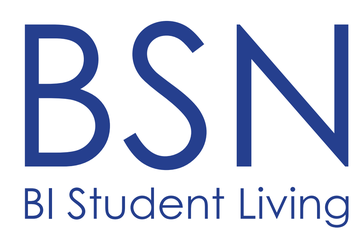
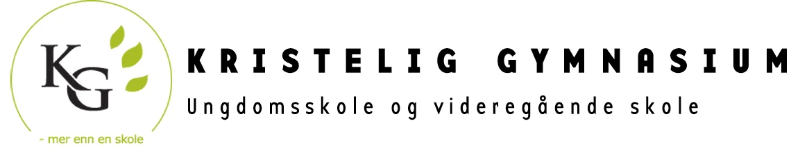
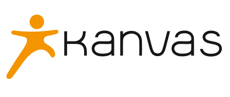
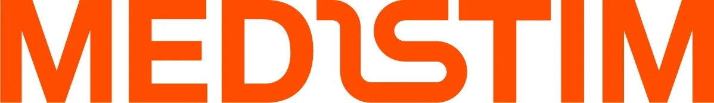
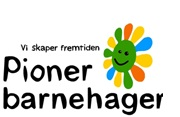
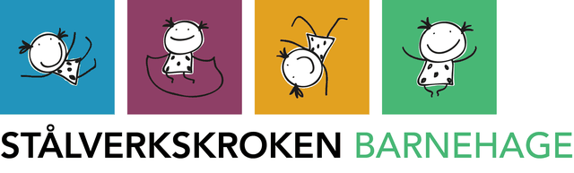
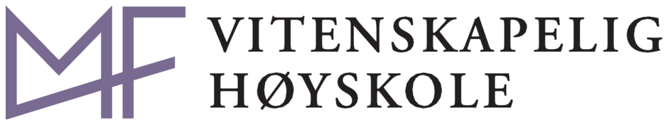

Uendret. To rader, 4 + 3 sentrert.
Referanser







Like store celler med tynne skillelinjer. Den åttende cella fylles av den eksisterende lenka, så rad to ikke ender med et hull. Cella lyser svakt teal ved hover. Mobil: to kolonner.
Referanser
Alle sju på én linje som glir sakte forbi (38 s per runde), stopper ved hover, og viser vanlig stilleliggende rad ved «redusert bevegelse». Dette er den som beveger mest.
Referanser